The multi zone office complex air emulator model emulating a large office building with multi-zone VAV systems, chilled water systems, and hot water systems. In the emulator, the Spawn-of-EnergyPlus (Spawn) supports the cosimulation of EnergyPlus and Modelica. EnergyPlus (V9.6) calculates the building’s thermal loads with the boundary conditions. Modelica is responsible for the airflow calculation (e.g., building infiltration) and HVAC system and controls. The geometry of the large offcie building is shown in the figure below.
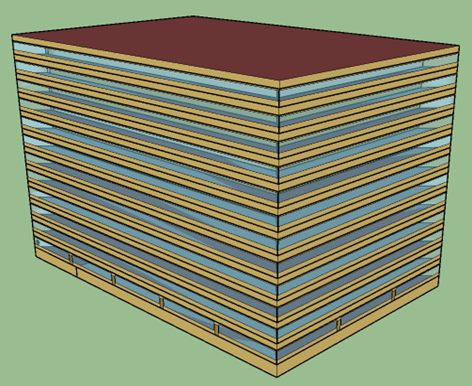
The layout is representative of the large commercial office building stock and is consistent with the building prototypes. The test case is located in Chicago, IL and based on the DOE Reference Large Office Building Model (Constructed In or After 1980). The original model has 12 floors with a basement. For simplicity, the middle 10 floors are treated as identical and are modeled as a single representative floor, resulting in three modeled floors (ground, middle, and top), each served by a dedicated AHU. The ground floor is assumed to be adiabatic with the basement.
The represented floor has five zones, with four perimeter zones and one core zone. Each perimeter zone has a window-to-wall ratio of about 0.38. The height of each zone is 2.74 m and the areas are as follows:
The geometry of the floor is shown as the following figure:
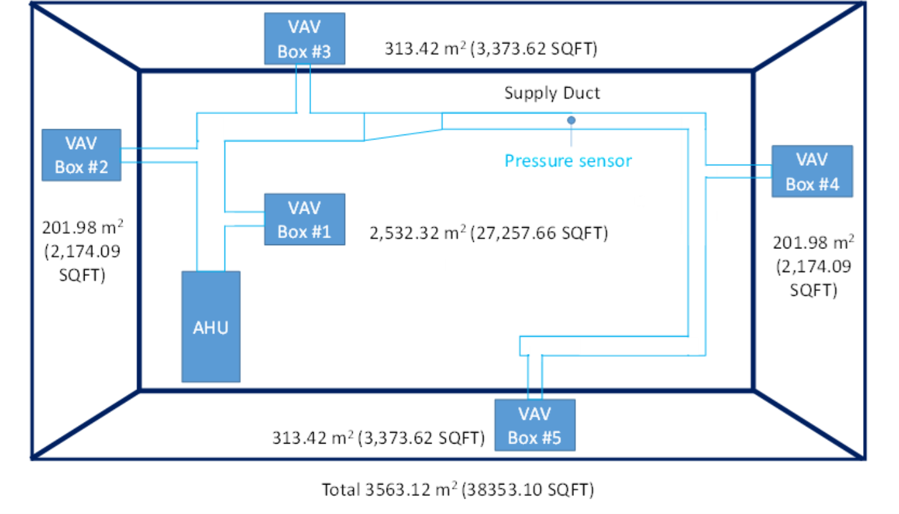
Opaque constructions: Mass walls; built-up flat roof (insulation above deck); slab-on-grade floor.
Windows: Window-to-wall ratio = 38.0%, equal distribution of windows.
The design occupancy density is 0.05 people/m2. The people internal gain is calucalted based on the activity level of 120 W. The number of occupants present in each zone at any time coincides with the internal gain schedule. The occupied time for the HVAC system is between 6:00 and 22:00 each day. The unoccupied time is outside of this period.
The design internal gains include lighting, plug loads, and people. The lighting load is with a radiant-convective-visible split of 70%-10%-20%. The plug load is with a radiant-convective-latent split of 50%-50%-0%. The people load is with a radiant-convective split of 30%-70%. The occupancy and the internal gains are activated according to the schedule in the figure below.
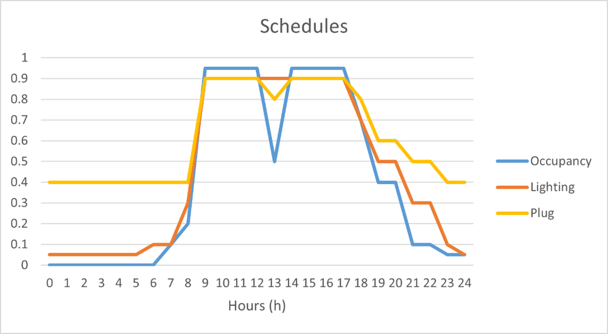
The power densities of the internal gains are listed in the following table.
| Internal Gains | Power Density [W/m2] |
|---|---|
| Lighting | 16.14 |
| Plug | 10.76 |
The weather data is from TMY3 for Chicago O'Hare International Airport.
The HVAC system of the test case can be categorized into the air-side systems (i.e., variable air volume (VAV) systems) and water-side systems (i.e., a chilled water systems and a hot water system).
The air-side systems are VAV systems with terminal reheat. Each floor is served by a dedicated AHU and each zone of the test case is served by a dedicated VAV box. The following figure depicts how the VAVs, AHU, and zones are connected on each floor in general. There are two fans (i.e., one supply fan, and one return fan) in the AHU system. A mixing box carries out the economizer function of providing cooling and ventilation. It is noted that no pre-heating coil is installed in the AHU and the heating is provided by the reheat coils in the VAV terminals.
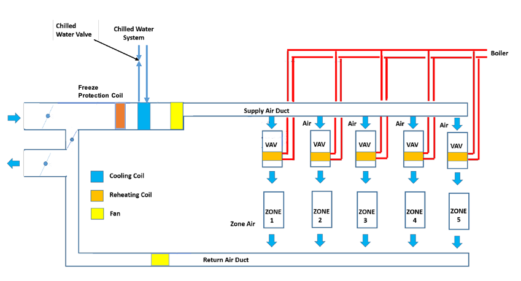
The water-side systems of the test case include one chilled water system and one hot water system. The chilled water systems are composed of three chillers, three cooling towers, a primary chilled water loop with three constant speed pumps, a secondary chilled water loop with two variable speed pumps, and a condenser water loop with three constant speed pumps. The hot water system consists of two gas boilers and two variable speed pumps. The figure below shows the schematics of the chilled water and hot water systems.
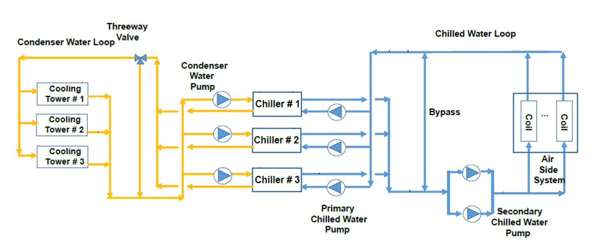
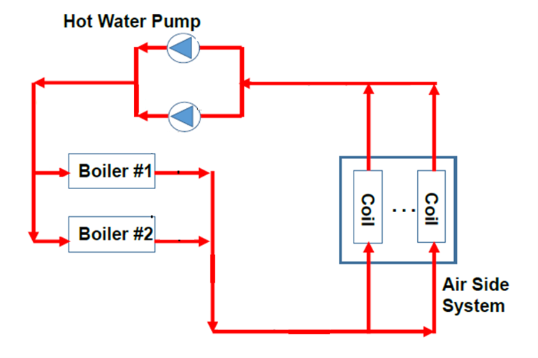
The HVAC sizing in Modelica is determined by the annual simulation results of EnergyPlus. The pressure loop related sizing parameters are estimated using a common HVAC design procedure. The following tables list all the sizing parameters in detail.
| VAV terminal with Reheat Coil | Design Air Mass Flow Rate [kg/s] | Minimum Damper Position | Design Reheat Coil Water Mass Flow Rate [kg/s] |
|---|---|---|---|
| Bot Floor Core Zone VAV | 49.1 | 0.3 | 3.88 |
| Mid Floor Core Zone VAV | 491.4 | 0.3 | 38.8 |
| Top Floor Core Zone VAV | 49.1 | 0.3 | 3.88 |
| Bot Floor South Zone VAV | 10.1 | 0.3 | 0.8 |
| Bot Floor East Zone VAV | 6.7 | 0.3 | 0.53 |
| Bot Floor North Zone VAV | 8.6 | 0.3 | 0.68 |
| Bot Floor West Zone VAV | 7.8 | 0.3 | 0.62 |
| Mid Floor South Zone VAV | 101.2 | 0.3 | 8 |
| Mid Floor East Zone VAV | 67 | 0.3 | 5.3 |
| Mid Floor North Zone VAV | 85.5 | 0.3 | 6.8 |
| Mid Floor West Zone VAV | 77.9 | 0.3 | 6.2 |
| Top Floor South Zone VAV | 10.1 | 0.3 | 0.8 |
| Top Floor East Zone VAV | 6.7 | 0.3 | 0.53 |
| Top Floor North Zone VAV | 8.6 | 0.3 | 0.68 |
| Top Floor West Zone VAV | 7.8 | 0.3 | 0.62 |
| AHU Cooling Coils | Design Coil Capacity [W] | Design Water Mass Flow Rate [kg/s] | Design Air Mass Flow Rate [m3/s] |
|---|---|---|---|
| Bot Floor Cooling Coil | 750,000 | 26 | 70 |
| Mid Floor Cooling Coil | 7,500,000 | 260 | 700 |
| Top Floor Cooling Coil | 1,000,000 | 30 | 70 |
| Fans | Type | Design Size Supply Fan Mass Flow Rate [kg/s] | Design Size Supply Fan Pressure Head [Pa] | Total Efficiency | Design Power Consumption [W] |
|---|---|---|---|---|---|
| Bot Floor Supply Fan | Variable speed | 70 | 1000 | 0.72 | 97,222 |
| Mid Floor Supply Fan | Variable speed | 700 | 1000 | 0.72 | 972,222 |
| Top Floor Supply Fan | Variable speed | 70 | 1000 | 0.72 | 97,222 |
| Bot Floor Return Fan | Variable speed | 70 | 300 | 0.72 | 29,167 |
| Mid Floor Return Fan | Variable speed | 700 | 300 | 0.72 | 291,667 |
| Top Floor Return Fan | Variable speed | 70 | 300 | 0.72 | 29,167 |
| Pumps | Type | Design Mass Flow Rate [kg/s] | Design Size Supply Pump Pressure Head [Pa] | Total Efficiency | Design Power Consumption [W] |
|---|---|---|---|---|---|
| CHW Primary Pumps 1-3 | Constant speed | 105 | 211,000 | 0.87 | 25,000 |
| CHW Secondary Pumps 1-2 | Variable speed | 155 | 478,000 | 0.88 | 90,000 |
| CW Pumps 1-3 | Variable speed | 123 | 571,100 | 0.87 | 81,000 |
| HW Pumps 1-2 | Variable speed | 39 | 478,250 | 0.86 | 22,900 |
| Chillers | Design Chilled Water Mass Flow Rate [kg/s] | Design Condenser Water Mass Flow Rate [kg/s] | Design Capacity [W] |
|---|---|---|---|
| Chillers 1-3 | 105 | 123 | 2,600,000 |
| Boilers | Design Hot Water Mass Flow Rate [kg/s] | Design Capacity [W] |
|---|---|---|
| Boiler 1-2 | 39 | 3,300,000 |
| Cooling Towers | Design Water Mass Flow Rate [kg/s] | Fan Power at Design Air Flow Rate [W] |
|---|---|---|
| Cooling Towers 1-2 | 123 | 43,000 |
Zone air temperature setpoints and equipment enable/disable are determined by a schedule-based supervisory control scheme that defines a set of operating modes. The table below shows the zone air temperature setpoints, fan, and pump enable/disable.
| Name | Condition | TZonHeaSet [degC] | TZonCooSet [degC] | Fan | Pump | TSupSet [degC] | Economizer | Min OA Flow |
|---|---|---|---|---|---|---|---|---|
| Occupied | In occupied period. | 20 | 24 | Enabled | Enabled | 12.8 | Enabled | Ventilation |
| Unoccupied off | In unoccupied period, all TZon within setback deadband. | 15.6 | 26.7 | Disabled | Enabled (With the lowest flow rate) | 12.8 | Disabled | Zero |
| Unoccupied, night setback | In unoccupied period, triggered by minimum TZon below unoccupied TZonHeaSet. Minimum state time is 60 min. | 15.6 | 26.7 | Enabled | Enabled | 12.8 | Disabled | Zero |
| Unoccupied, night setup | In unoccupied period, triggered by maximum TZon above unoccupied TZonCooSet. Minimum state time is 60 min. | 15.6 | 26.7 | Enabled | Enabled | 12.8 | Disabled | Zero |
Once the operating mode is determined, a number of low-level, local-loop controllers are used to maintain the desired setpoints using the available actuators. The primary local-loop controllers are specified in the HVAC system control section.
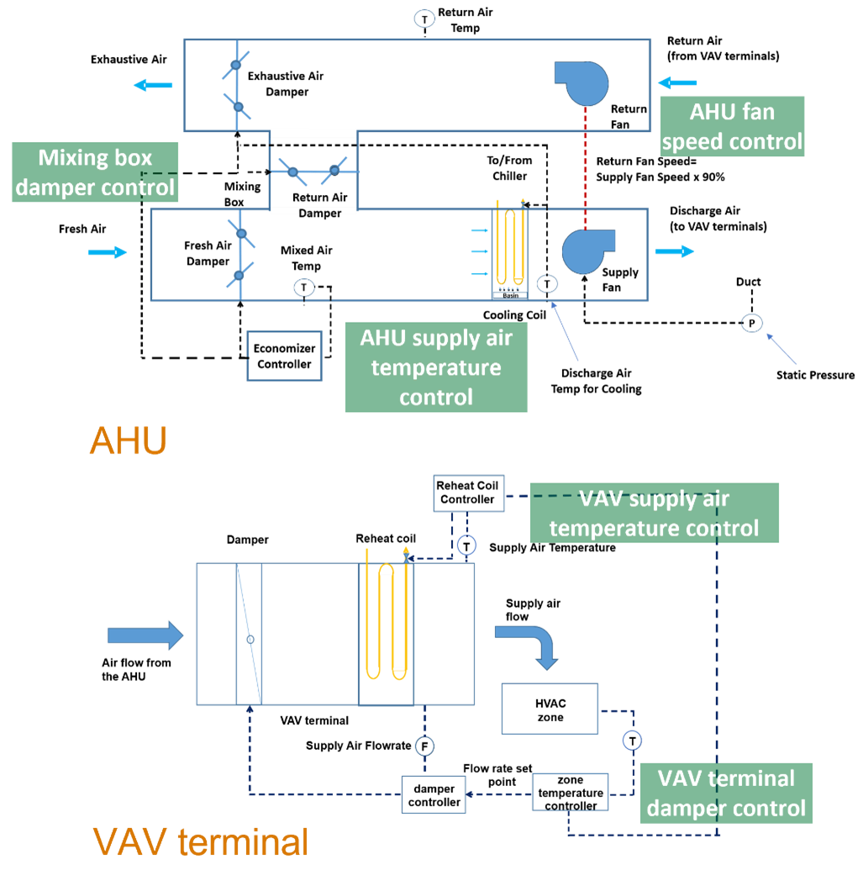
VAV reheat control
The VAV reheat is controlled based on the "single maximum VAV reheat control logic".
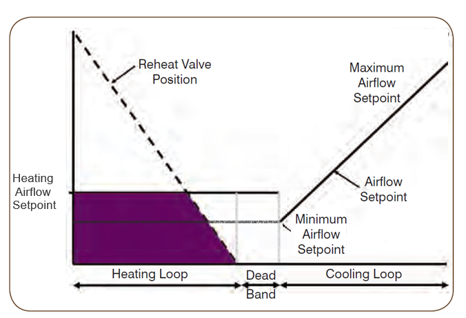
VAV air flow rate control
VAV damper position is controlled by a PI controller to maintain the air flow rate at setpoint. It takes the zone air flow rate measurements and setpoints as inputs. It takes the VAV damper position as the output.
VAV supply air temperature control
Heating coil valve position is controlled by a PI controller to maintain the supply air temperature at setpoint. It takes the supply air temperature measurements and setpoint as inputs. It takes the heating coil valve position as the output.
AHU duct static pressure control
Supply fan speed is controlled by a PI controller to maintain duct static pressure (DSP) at setpoint when the fan is proven ON. It takes the static pressure measurements and setpoints as inputs. It takes the supply fan speed as the output. The AHU return fan speed is set as a constant ratio (0.9) of the supply fan speed .
AHU supply air temperature control
Cooling coil valve position is controlled by a PI controller to maintain the AHU supply air temperature at setpoint. It takes the supply air temperature measurements and setpoints as inputs. It takes the cooling coil valve position as the output.
Mixing box damper and economizer control
In the mixing box of the AHU, an economizer is implemented to use the outdoor air to meet the cooling load when outdoor conditions are favorable.
Outdoor air damper position is controlled by a PI controller to maintain the mixed air temperature at setpoint. It takes the mixed and outdoor air temperature measurements, as well as the mixed air temperature setpoints as inputs. It takes the outdoor air damper position as the output. The return air damper are interlocked with the outdoor air damper while exhausted air damper share the same opening position with the outdoor air damper.
On top of that, an economizer control based on the fixed dry-bulb outdoor air temperature-based is adopted. The economizer higher temperature limit is set as 21 ℃ according to ASHRAE 90.1-2019 for Climate Zone 5A.
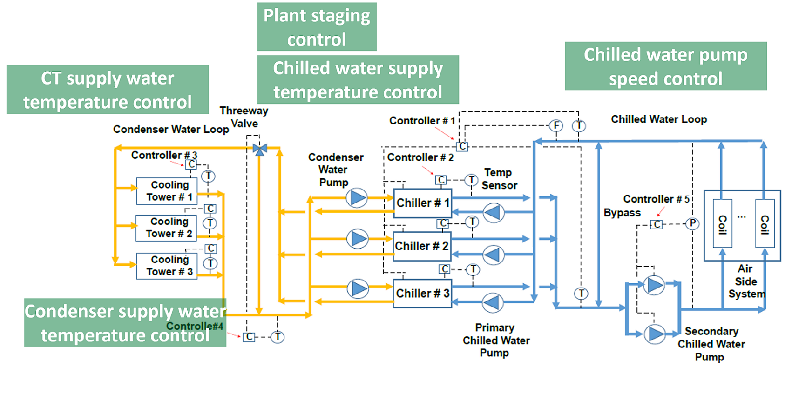
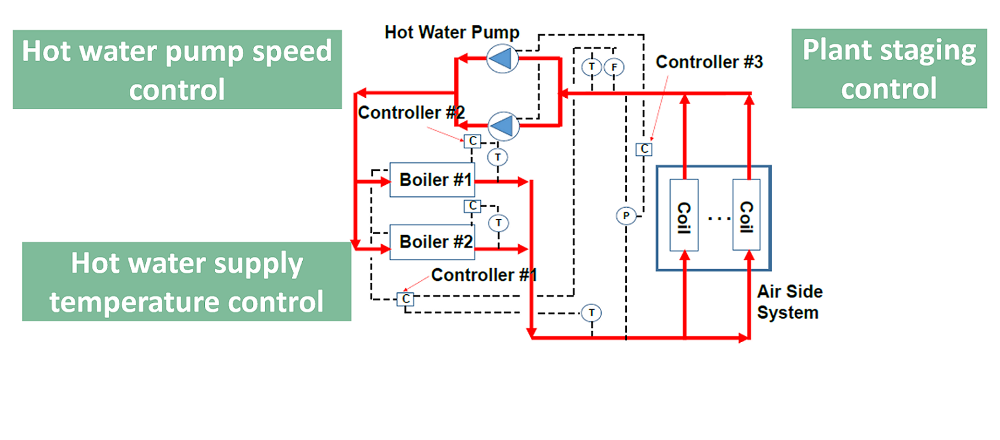
Chiller plant staging control
The number of operating chillers is determined via a state machine based on the thermal load (Q, kW), rated chiller cooling capacity of chiller k (cck, kW), threshold to start chiller k+1 (ξk = 0.9), and waiting time (15 min). The maximum operating chiller number is N, which is equal to 3.
The stage control logic is shown as the following figure.
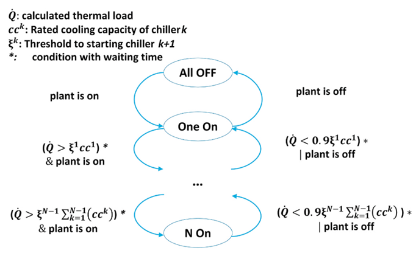
Chilled water supply temperature control
The model takes as an input the set point for the leaving chilled water temperature, which is met if the chiller has sufficient capacity. Thus, the model has a built-in, ideal temperature control.
Secondary chilled water pump staging control
The number of secondary chilled water pump is determined via a state machine based on the pump speed (S, rpm) and waiting time (30 min). The maximum operating pump number is M, which is equal to 2.
The stage control logic is shown as the following figure.
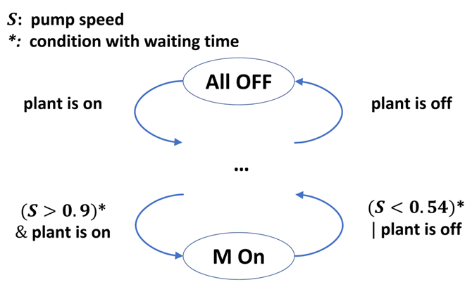
Secondary chilled water loop static pressure control
Secondary chilled water pump speed is controlled by a PI controller to maintain the static pressure of the secondary chilled water loop at setpoint. It takes the chilled water loop static pressure measurements and setpoints as inputs. It takes the pump speed as the output. The operating secondary chilled water pumps share the same speed.
Cooling tower supply water temperature control
Cooling tower fan speed is controlled by a PI controller to maintain the cooling tower supply water temperature at setpoint. It takes the cooling tower supply water temperature measurements and setpoints as inputs. It takes the cooling tower fan speed as the output. All the operating cooling towers share the same fan speed.
Minimum condenser supply water temperature control
Three-way valve position is controlled by a PI controller to maintain the temperature of the condenser water leaving the condenser water loop to be larger than 15.56 ℃. It takes the condenser supply water temperature measurements and setpoints as inputs. It takes the three-way valve position as the output.
Boiler staging control
The number of operating boilers is determined via a state machine based on the thermal load(Q, kW), rated heating capacity of boiler k (hck, kW), threshold to start boiler k+1 (ξk = 0.9), and waiting time (30 min). The maximum operating boiler number is N, which is equal to 2.
The stage control logic is shown as the following figure.
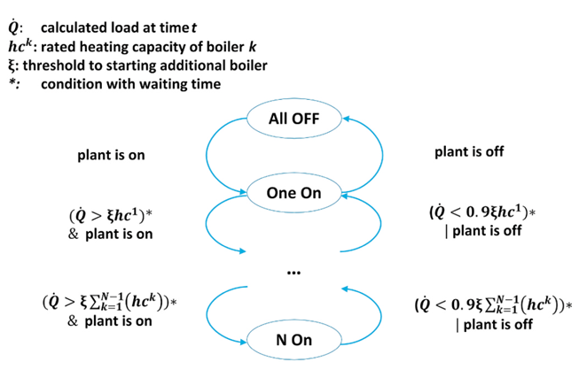
Boiler water temperature control
Boiler heating power is controlled by a PI controller to maintain the temperature of the hot water leaving each boiler to be 80 ℃. It takes the hot water measurements and set points as inputs. It takes the heating power as the output.
Boiler hot water loop static pressure control
Boiler pump speed is controlled by a PI controller to maintain the static pressure of the boiler water loop at setpoint. It takes the heat water loop static pressure measurements and setpoints as inputs. It takes the pump speed as the output. All the boiler pumps share the same speed.
hva_floor1_TSupAirSet_activate [1] [min=0, max=1]: Activation signal to overwrite input hva_floor1_TSupAirSet_u where 1 activates, 0 deactivates (default value)
hva_floor1_TSupAirSet_u [K] [min=285.15, max=313.15]: Supply air temperature setpoint for AHU
hva_floor1_dpSet_activate [1] [min=0, max=1]: Activation signal to overwrite input hva_floor1_dpSet_u where 1 activates, 0 deactivates (default value)
hva_floor1_dpSet_u [Pa] [min=50, max=410]: Supply duct pressure setpoint for AHU
hva_floor1_duaFanAirHanUni_cooCoi_yCoo_activate [1] [min=0, max=1]: Activation signal to overwrite input hva_floor1_duaFanAirHanUni_cooCoi_yCoo_u where 1 activates, 0 deactivates (default value)
hva_floor1_duaFanAirHanUni_cooCoi_yCoo_u [1] [min=0, max=1]: Cooling coil valve control signal for AHU
hva_floor1_duaFanAirHanUni_mixingBox_mixBox_yEA_activate [1] [min=0, max=1]: Activation signal to overwrite input hva_floor1_duaFanAirHanUni_mixingBox_mixBox_yEA_u where 1 activates, 0 deactivates (default value)
hva_floor1_duaFanAirHanUni_mixingBox_mixBox_yEA_u [1] [min=0, max=1]: Exhaust air damper position setpoint for AHU
hva_floor1_duaFanAirHanUni_mixingBox_mixBox_yOA_activate [1] [min=0, max=1]: Activation signal to overwrite input hva_floor1_duaFanAirHanUni_mixingBox_mixBox_yOA_u where 1 activates, 0 deactivates (default value)
hva_floor1_duaFanAirHanUni_mixingBox_mixBox_yOA_u [1] [min=0, max=1]: Outside air damper position setpoint for AHU
hva_floor1_duaFanAirHanUni_mixingBox_mixBox_yRet_activate [1] [min=0, max=1]: Activation signal to overwrite input hva_floor1_duaFanAirHanUni_mixingBox_mixBox_yRet_u where 1 activates, 0 deactivates (default value)
hva_floor1_duaFanAirHanUni_mixingBox_mixBox_yRet_u [1] [min=0, max=1]: Return air damper position setpoint for AHU
hva_floor1_duaFanAirHanUni_oveSpeRetFan_activate [1] [min=0, max=1]: Activation signal to overwrite input hva_floor1_duaFanAirHanUni_oveSpeRetFan_u where 1 activates, 0 deactivates (default value)
hva_floor1_duaFanAirHanUni_oveSpeRetFan_u [1] [min=0, max=1]: AHU return fan speed control signal
hva_floor1_duaFanAirHanUni_supFan_oveSpeSupFan_activate [1] [min=0, max=1]: Activation signal to overwrite input hva_floor1_duaFanAirHanUni_supFan_oveSpeSupFan_u where 1 activates, 0 deactivates (default value)
hva_floor1_duaFanAirHanUni_supFan_oveSpeSupFan_u [1] [min=0, max=1]: AHU supply fan speed control signal
hva_floor1_fivZonVAV_vAV1_oveZonLoc_yDam_activate [1] [min=0, max=1]: Activation signal to overwrite input hva_floor1_fivZonVAV_vAV1_oveZonLoc_yDam_u where 1 activates, 0 deactivates (default value)
hva_floor1_fivZonVAV_vAV1_oveZonLoc_yDam_u [1] [min=0, max=1]: Damper position setpoint for zone cor
hva_floor1_fivZonVAV_vAV1_oveZonLoc_yReaHea_activate [1] [min=0, max=1]: Activation signal to overwrite input hva_floor1_fivZonVAV_vAV1_oveZonLoc_yReaHea_u where 1 activates, 0 deactivates (default value)
hva_floor1_fivZonVAV_vAV1_oveZonLoc_yReaHea_u [1] [min=0, max=1]: Reheat control signal for zone cor
hva_floor1_fivZonVAV_vAV2_oveZonLoc_yDam_activate [1] [min=0, max=1]: Activation signal to overwrite input hva_floor1_fivZonVAV_vAV2_oveZonLoc_yDam_u where 1 activates, 0 deactivates (default value)
hva_floor1_fivZonVAV_vAV2_oveZonLoc_yDam_u [1] [min=0, max=1]: Damper position setpoint for zone sou
hva_floor1_fivZonVAV_vAV2_oveZonLoc_yReaHea_activate [1] [min=0, max=1]: Activation signal to overwrite input hva_floor1_fivZonVAV_vAV2_oveZonLoc_yReaHea_u where 1 activates, 0 deactivates (default value)
hva_floor1_fivZonVAV_vAV2_oveZonLoc_yReaHea_u [1] [min=0, max=1]: Reheat control signal for zone sou
hva_floor1_fivZonVAV_vAV3_oveZonLoc_yDam_activate [1] [min=0, max=1]: Activation signal to overwrite input hva_floor1_fivZonVAV_vAV3_oveZonLoc_yDam_u where 1 activates, 0 deactivates (default value)
hva_floor1_fivZonVAV_vAV3_oveZonLoc_yDam_u [1] [min=0, max=1]: Damper position setpoint for zone eas
hva_floor1_fivZonVAV_vAV3_oveZonLoc_yReaHea_activate [1] [min=0, max=1]: Activation signal to overwrite input hva_floor1_fivZonVAV_vAV3_oveZonLoc_yReaHea_u where 1 activates, 0 deactivates (default value)
hva_floor1_fivZonVAV_vAV3_oveZonLoc_yReaHea_u [1] [min=0, max=1]: Reheat control signal for zone eas
hva_floor1_fivZonVAV_vAV4_oveZonLoc_yDam_activate [1] [min=0, max=1]: Activation signal to overwrite input hva_floor1_fivZonVAV_vAV4_oveZonLoc_yDam_u where 1 activates, 0 deactivates (default value)
hva_floor1_fivZonVAV_vAV4_oveZonLoc_yDam_u [1] [min=0, max=1]: Damper position setpoint for zone nor
hva_floor1_fivZonVAV_vAV4_oveZonLoc_yReaHea_activate [1] [min=0, max=1]: Activation signal to overwrite input hva_floor1_fivZonVAV_vAV4_oveZonLoc_yReaHea_u where 1 activates, 0 deactivates (default value)
hva_floor1_fivZonVAV_vAV4_oveZonLoc_yReaHea_u [1] [min=0, max=1]: Reheat control signal for zone nor
hva_floor1_fivZonVAV_vAV5_oveZonLoc_yDam_activate [1] [min=0, max=1]: Activation signal to overwrite input hva_floor1_fivZonVAV_vAV5_oveZonLoc_yDam_u where 1 activates, 0 deactivates (default value)
hva_floor1_fivZonVAV_vAV5_oveZonLoc_yDam_u [1] [min=0, max=1]: Damper position setpoint for zone wes
hva_floor1_fivZonVAV_vAV5_oveZonLoc_yReaHea_activate [1] [min=0, max=1]: Activation signal to overwrite input hva_floor1_fivZonVAV_vAV5_oveZonLoc_yReaHea_u where 1 activates, 0 deactivates (default value)
hva_floor1_fivZonVAV_vAV5_oveZonLoc_yReaHea_u [1] [min=0, max=1]: Reheat control signal for zone wes
hva_floor1_oveZonCor_TZonCooSet_activate [1] [min=0, max=1]: Activation signal to overwrite input hva_floor1_oveZonCor_TZonCooSet_u where 1 activates, 0 deactivates (default value)
hva_floor1_oveZonCor_TZonCooSet_u [K] [min=285.15, max=313.15]: Zone air temperature cooling setpoint for zone bot_floor_cor
hva_floor1_oveZonCor_TZonHeaSet_activate [1] [min=0, max=1]: Activation signal to overwrite input hva_floor1_oveZonCor_TZonHeaSet_u where 1 activates, 0 deactivates (default value)
hva_floor1_oveZonCor_TZonHeaSet_u [K] [min=285.15, max=313.15]: Zone air temperature heating setpoint for zone bot_floor_cor
hva_floor1_oveZonEas_TZonCooSet_activate [1] [min=0, max=1]: Activation signal to overwrite input hva_floor1_oveZonEas_TZonCooSet_u where 1 activates, 0 deactivates (default value)
hva_floor1_oveZonEas_TZonCooSet_u [K] [min=285.15, max=313.15]: Zone air temperature cooling setpoint for zone bot_floor_eas
hva_floor1_oveZonEas_TZonHeaSet_activate [1] [min=0, max=1]: Activation signal to overwrite input hva_floor1_oveZonEas_TZonHeaSet_u where 1 activates, 0 deactivates (default value)
hva_floor1_oveZonEas_TZonHeaSet_u [K] [min=285.15, max=313.15]: Zone air temperature heating setpoint for zone bot_floor_eas
hva_floor1_oveZonNor_TZonCooSet_activate [1] [min=0, max=1]: Activation signal to overwrite input hva_floor1_oveZonNor_TZonCooSet_u where 1 activates, 0 deactivates (default value)
hva_floor1_oveZonNor_TZonCooSet_u [K] [min=285.15, max=313.15]: Zone air temperature cooling setpoint for zone bot_floor_nor
hva_floor1_oveZonNor_TZonHeaSet_activate [1] [min=0, max=1]: Activation signal to overwrite input hva_floor1_oveZonNor_TZonHeaSet_u where 1 activates, 0 deactivates (default value)
hva_floor1_oveZonNor_TZonHeaSet_u [K] [min=285.15, max=313.15]: Zone air temperature heating setpoint for zone bot_floor_nor
hva_floor1_oveZonSou_TZonCooSet_activate [1] [min=0, max=1]: Activation signal to overwrite input hva_floor1_oveZonSou_TZonCooSet_u where 1 activates, 0 deactivates (default value)
hva_floor1_oveZonSou_TZonCooSet_u [K] [min=285.15, max=313.15]: Zone air temperature cooling setpoint for zone bot_floor_sou
hva_floor1_oveZonSou_TZonHeaSet_activate [1] [min=0, max=1]: Activation signal to overwrite input hva_floor1_oveZonSou_TZonHeaSet_u where 1 activates, 0 deactivates (default value)
hva_floor1_oveZonSou_TZonHeaSet_u [K] [min=285.15, max=313.15]: Zone air temperature heating setpoint for zone bot_floor_sou
hva_floor1_oveZonWes_TZonCooSet_activate [1] [min=0, max=1]: Activation signal to overwrite input hva_floor1_oveZonWes_TZonCooSet_u where 1 activates, 0 deactivates (default value)
hva_floor1_oveZonWes_TZonCooSet_u [K] [min=285.15, max=313.15]: Zone air temperature cooling setpoint for zone bot_floor_wes
hva_floor1_oveZonWes_TZonHeaSet_activate [1] [min=0, max=1]: Activation signal to overwrite input hva_floor1_oveZonWes_TZonHeaSet_u where 1 activates, 0 deactivates (default value)
hva_floor1_oveZonWes_TZonHeaSet_u [K] [min=285.15, max=313.15]: Zone air temperature heating setpoint for zone bot_floor_wes
hva_floor2_TSupAirSet_activate [1] [min=0, max=1]: Activation signal to overwrite input hva_floor2_TSupAirSet_u where 1 activates, 0 deactivates (default value)
hva_floor2_TSupAirSet_u [K] [min=285.15, max=313.15]: Supply air temperature setpoint for AHU
hva_floor2_dpSet_activate [1] [min=0, max=1]: Activation signal to overwrite input hva_floor2_dpSet_u where 1 activates, 0 deactivates (default value)
hva_floor2_dpSet_u [Pa] [min=50, max=410]: Supply duct pressure setpoint for AHU
hva_floor2_duaFanAirHanUni_cooCoi_yCoo_activate [1] [min=0, max=1]: Activation signal to overwrite input hva_floor2_duaFanAirHanUni_cooCoi_yCoo_u where 1 activates, 0 deactivates (default value)
hva_floor2_duaFanAirHanUni_cooCoi_yCoo_u [1] [min=0, max=1]: Cooling coil valve control signal for AHU
hva_floor2_duaFanAirHanUni_mixingBox_mixBox_yEA_activate [1] [min=0, max=1]: Activation signal to overwrite input hva_floor2_duaFanAirHanUni_mixingBox_mixBox_yEA_u where 1 activates, 0 deactivates (default value)
hva_floor2_duaFanAirHanUni_mixingBox_mixBox_yEA_u [1] [min=0, max=1]: Exhaust air damper position setpoint for AHU
hva_floor2_duaFanAirHanUni_mixingBox_mixBox_yOA_activate [1] [min=0, max=1]: Activation signal to overwrite input hva_floor2_duaFanAirHanUni_mixingBox_mixBox_yOA_u where 1 activates, 0 deactivates (default value)
hva_floor2_duaFanAirHanUni_mixingBox_mixBox_yOA_u [1] [min=0, max=1]: Outside air damper position setpoint for AHU
hva_floor2_duaFanAirHanUni_mixingBox_mixBox_yRet_activate [1] [min=0, max=1]: Activation signal to overwrite input hva_floor2_duaFanAirHanUni_mixingBox_mixBox_yRet_u where 1 activates, 0 deactivates (default value)
hva_floor2_duaFanAirHanUni_mixingBox_mixBox_yRet_u [1] [min=0, max=1]: Return air damper position setpoint for AHU
hva_floor2_duaFanAirHanUni_oveSpeRetFan_activate [1] [min=0, max=1]: Activation signal to overwrite input hva_floor2_duaFanAirHanUni_oveSpeRetFan_u where 1 activates, 0 deactivates (default value)
hva_floor2_duaFanAirHanUni_oveSpeRetFan_u [1] [min=0, max=1]: AHU return fan speed control signal
hva_floor2_duaFanAirHanUni_supFan_oveSpeSupFan_activate [1] [min=0, max=1]: Activation signal to overwrite input hva_floor2_duaFanAirHanUni_supFan_oveSpeSupFan_u where 1 activates, 0 deactivates (default value)
hva_floor2_duaFanAirHanUni_supFan_oveSpeSupFan_u [1] [min=0, max=1]: AHU supply fan speed control signal
hva_floor2_fivZonVAV_vAV1_oveZonLoc_yDam_activate [1] [min=0, max=1]: Activation signal to overwrite input hva_floor2_fivZonVAV_vAV1_oveZonLoc_yDam_u where 1 activates, 0 deactivates (default value)
hva_floor2_fivZonVAV_vAV1_oveZonLoc_yDam_u [1] [min=0, max=1]: Damper position setpoint for zone cor
hva_floor2_fivZonVAV_vAV1_oveZonLoc_yReaHea_activate [1] [min=0, max=1]: Activation signal to overwrite input hva_floor2_fivZonVAV_vAV1_oveZonLoc_yReaHea_u where 1 activates, 0 deactivates (default value)
hva_floor2_fivZonVAV_vAV1_oveZonLoc_yReaHea_u [1] [min=0, max=1]: Reheat control signal for zone cor
hva_floor2_fivZonVAV_vAV2_oveZonLoc_yDam_activate [1] [min=0, max=1]: Activation signal to overwrite input hva_floor2_fivZonVAV_vAV2_oveZonLoc_yDam_u where 1 activates, 0 deactivates (default value)
hva_floor2_fivZonVAV_vAV2_oveZonLoc_yDam_u [1] [min=0, max=1]: Damper position setpoint for zone sou
hva_floor2_fivZonVAV_vAV2_oveZonLoc_yReaHea_activate [1] [min=0, max=1]: Activation signal to overwrite input hva_floor2_fivZonVAV_vAV2_oveZonLoc_yReaHea_u where 1 activates, 0 deactivates (default value)
hva_floor2_fivZonVAV_vAV2_oveZonLoc_yReaHea_u [1] [min=0, max=1]: Reheat control signal for zone sou
hva_floor2_fivZonVAV_vAV3_oveZonLoc_yDam_activate [1] [min=0, max=1]: Activation signal to overwrite input hva_floor2_fivZonVAV_vAV3_oveZonLoc_yDam_u where 1 activates, 0 deactivates (default value)
hva_floor2_fivZonVAV_vAV3_oveZonLoc_yDam_u [1] [min=0, max=1]: Damper position setpoint for zone eas
hva_floor2_fivZonVAV_vAV3_oveZonLoc_yReaHea_activate [1] [min=0, max=1]: Activation signal to overwrite input hva_floor2_fivZonVAV_vAV3_oveZonLoc_yReaHea_u where 1 activates, 0 deactivates (default value)
hva_floor2_fivZonVAV_vAV3_oveZonLoc_yReaHea_u [1] [min=0, max=1]: Reheat control signal for zone eas
hva_floor2_fivZonVAV_vAV4_oveZonLoc_yDam_activate [1] [min=0, max=1]: Activation signal to overwrite input hva_floor2_fivZonVAV_vAV4_oveZonLoc_yDam_u where 1 activates, 0 deactivates (default value)
hva_floor2_fivZonVAV_vAV4_oveZonLoc_yDam_u [1] [min=0, max=1]: Damper position setpoint for zone nor
hva_floor2_fivZonVAV_vAV4_oveZonLoc_yReaHea_activate [1] [min=0, max=1]: Activation signal to overwrite input hva_floor2_fivZonVAV_vAV4_oveZonLoc_yReaHea_u where 1 activates, 0 deactivates (default value)
hva_floor2_fivZonVAV_vAV4_oveZonLoc_yReaHea_u [1] [min=0, max=1]: Reheat control signal for zone nor
hva_floor2_fivZonVAV_vAV5_oveZonLoc_yDam_activate [1] [min=0, max=1]: Activation signal to overwrite input hva_floor2_fivZonVAV_vAV5_oveZonLoc_yDam_u where 1 activates, 0 deactivates (default value)
hva_floor2_fivZonVAV_vAV5_oveZonLoc_yDam_u [1] [min=0, max=1]: Damper position setpoint for zone wes
hva_floor2_fivZonVAV_vAV5_oveZonLoc_yReaHea_activate [1] [min=0, max=1]: Activation signal to overwrite input hva_floor2_fivZonVAV_vAV5_oveZonLoc_yReaHea_u where 1 activates, 0 deactivates (default value)
hva_floor2_fivZonVAV_vAV5_oveZonLoc_yReaHea_u [1] [min=0, max=1]: Reheat control signal for zone wes
hva_floor2_oveZonCor_TZonCooSet_activate [1] [min=0, max=1]: Activation signal to overwrite input hva_floor2_oveZonCor_TZonCooSet_u where 1 activates, 0 deactivates (default value)
hva_floor2_oveZonCor_TZonCooSet_u [K] [min=285.15, max=313.15]: Zone air temperature cooling setpoint for zone mid_floor_cor
hva_floor2_oveZonCor_TZonHeaSet_activate [1] [min=0, max=1]: Activation signal to overwrite input hva_floor2_oveZonCor_TZonHeaSet_u where 1 activates, 0 deactivates (default value)
hva_floor2_oveZonCor_TZonHeaSet_u [K] [min=285.15, max=313.15]: Zone air temperature heating setpoint for zone mid_floor_cor
hva_floor2_oveZonEas_TZonCooSet_activate [1] [min=0, max=1]: Activation signal to overwrite input hva_floor2_oveZonEas_TZonCooSet_u where 1 activates, 0 deactivates (default value)
hva_floor2_oveZonEas_TZonCooSet_u [K] [min=285.15, max=313.15]: Zone air temperature cooling setpoint for zone mid_floor_eas
hva_floor2_oveZonEas_TZonHeaSet_activate [1] [min=0, max=1]: Activation signal to overwrite input hva_floor2_oveZonEas_TZonHeaSet_u where 1 activates, 0 deactivates (default value)
hva_floor2_oveZonEas_TZonHeaSet_u [K] [min=285.15, max=313.15]: Zone air temperature heating setpoint for zone mid_floor_eas
hva_floor2_oveZonNor_TZonCooSet_activate [1] [min=0, max=1]: Activation signal to overwrite input hva_floor2_oveZonNor_TZonCooSet_u where 1 activates, 0 deactivates (default value)
hva_floor2_oveZonNor_TZonCooSet_u [K] [min=285.15, max=313.15]: Zone air temperature cooling setpoint for zone mid_floor_nor
hva_floor2_oveZonNor_TZonHeaSet_activate [1] [min=0, max=1]: Activation signal to overwrite input hva_floor2_oveZonNor_TZonHeaSet_u where 1 activates, 0 deactivates (default value)
hva_floor2_oveZonNor_TZonHeaSet_u [K] [min=285.15, max=313.15]: Zone air temperature heating setpoint for zone mid_floor_nor
hva_floor2_oveZonSou_TZonCooSet_activate [1] [min=0, max=1]: Activation signal to overwrite input hva_floor2_oveZonSou_TZonCooSet_u where 1 activates, 0 deactivates (default value)
hva_floor2_oveZonSou_TZonCooSet_u [K] [min=285.15, max=313.15]: Zone air temperature cooling setpoint for zone mid_floor_sou
hva_floor2_oveZonSou_TZonHeaSet_activate [1] [min=0, max=1]: Activation signal to overwrite input hva_floor2_oveZonSou_TZonHeaSet_u where 1 activates, 0 deactivates (default value)
hva_floor2_oveZonSou_TZonHeaSet_u [K] [min=285.15, max=313.15]: Zone air temperature heating setpoint for zone mid_floor_sou
hva_floor2_oveZonWes_TZonCooSet_activate [1] [min=0, max=1]: Activation signal to overwrite input hva_floor2_oveZonWes_TZonCooSet_u where 1 activates, 0 deactivates (default value)
hva_floor2_oveZonWes_TZonCooSet_u [K] [min=285.15, max=313.15]: Zone air temperature cooling setpoint for zone mid_floor_wes
hva_floor2_oveZonWes_TZonHeaSet_activate [1] [min=0, max=1]: Activation signal to overwrite input hva_floor2_oveZonWes_TZonHeaSet_u where 1 activates, 0 deactivates (default value)
hva_floor2_oveZonWes_TZonHeaSet_u [K] [min=285.15, max=313.15]: Zone air temperature heating setpoint for zone mid_floor_wes
hva_floor3_TSupAirSet_activate [1] [min=0, max=1]: Activation signal to overwrite input hva_floor3_TSupAirSet_u where 1 activates, 0 deactivates (default value)
hva_floor3_TSupAirSet_u [K] [min=285.15, max=313.15]: Supply air temperature setpoint for AHU
hva_floor3_dpSet_activate [1] [min=0, max=1]: Activation signal to overwrite input hva_floor3_dpSet_u where 1 activates, 0 deactivates (default value)
hva_floor3_dpSet_u [Pa] [min=50, max=410]: Supply duct pressure setpoint for AHU
hva_floor3_duaFanAirHanUni_cooCoi_yCoo_activate [1] [min=0, max=1]: Activation signal to overwrite input hva_floor3_duaFanAirHanUni_cooCoi_yCoo_u where 1 activates, 0 deactivates (default value)
hva_floor3_duaFanAirHanUni_cooCoi_yCoo_u [1] [min=0, max=1]: Cooling coil valve control signal for AHU
hva_floor3_duaFanAirHanUni_mixingBox_mixBox_yEA_activate [1] [min=0, max=1]: Activation signal to overwrite input hva_floor3_duaFanAirHanUni_mixingBox_mixBox_yEA_u where 1 activates, 0 deactivates (default value)
hva_floor3_duaFanAirHanUni_mixingBox_mixBox_yEA_u [1] [min=0, max=1]: Exhaust air damper position setpoint for AHU
hva_floor3_duaFanAirHanUni_mixingBox_mixBox_yOA_activate [1] [min=0, max=1]: Activation signal to overwrite input hva_floor3_duaFanAirHanUni_mixingBox_mixBox_yOA_u where 1 activates, 0 deactivates (default value)
hva_floor3_duaFanAirHanUni_mixingBox_mixBox_yOA_u [1] [min=0, max=1]: Outside air damper position setpoint for AHU
hva_floor3_duaFanAirHanUni_mixingBox_mixBox_yRet_activate [1] [min=0, max=1]: Activation signal to overwrite input hva_floor3_duaFanAirHanUni_mixingBox_mixBox_yRet_u where 1 activates, 0 deactivates (default value)
hva_floor3_duaFanAirHanUni_mixingBox_mixBox_yRet_u [1] [min=0, max=1]: Return air damper position setpoint for AHU
hva_floor3_duaFanAirHanUni_oveSpeRetFan_activate [1] [min=0, max=1]: Activation signal to overwrite input hva_floor3_duaFanAirHanUni_oveSpeRetFan_u where 1 activates, 0 deactivates (default value)
hva_floor3_duaFanAirHanUni_oveSpeRetFan_u [1] [min=0, max=1]: AHU return fan speed control signal
hva_floor3_duaFanAirHanUni_supFan_oveSpeSupFan_activate [1] [min=0, max=1]: Activation signal to overwrite input hva_floor3_duaFanAirHanUni_supFan_oveSpeSupFan_u where 1 activates, 0 deactivates (default value)
hva_floor3_duaFanAirHanUni_supFan_oveSpeSupFan_u [1] [min=0, max=1]: AHU supply fan speed control signal
hva_floor3_fivZonVAV_vAV1_oveZonLoc_yDam_activate [1] [min=0, max=1]: Activation signal to overwrite input hva_floor3_fivZonVAV_vAV1_oveZonLoc_yDam_u where 1 activates, 0 deactivates (default value)
hva_floor3_fivZonVAV_vAV1_oveZonLoc_yDam_u [1] [min=0, max=1]: Damper position setpoint for zone cor
hva_floor3_fivZonVAV_vAV1_oveZonLoc_yReaHea_activate [1] [min=0, max=1]: Activation signal to overwrite input hva_floor3_fivZonVAV_vAV1_oveZonLoc_yReaHea_u where 1 activates, 0 deactivates (default value)
hva_floor3_fivZonVAV_vAV1_oveZonLoc_yReaHea_u [1] [min=0, max=1]: Reheat control signal for zone cor
hva_floor3_fivZonVAV_vAV2_oveZonLoc_yDam_activate [1] [min=0, max=1]: Activation signal to overwrite input hva_floor3_fivZonVAV_vAV2_oveZonLoc_yDam_u where 1 activates, 0 deactivates (default value)
hva_floor3_fivZonVAV_vAV2_oveZonLoc_yDam_u [1] [min=0, max=1]: Damper position setpoint for zone sou
hva_floor3_fivZonVAV_vAV2_oveZonLoc_yReaHea_activate [1] [min=0, max=1]: Activation signal to overwrite input hva_floor3_fivZonVAV_vAV2_oveZonLoc_yReaHea_u where 1 activates, 0 deactivates (default value)
hva_floor3_fivZonVAV_vAV2_oveZonLoc_yReaHea_u [1] [min=0, max=1]: Reheat control signal for zone sou
hva_floor3_fivZonVAV_vAV3_oveZonLoc_yDam_activate [1] [min=0, max=1]: Activation signal to overwrite input hva_floor3_fivZonVAV_vAV3_oveZonLoc_yDam_u where 1 activates, 0 deactivates (default value)
hva_floor3_fivZonVAV_vAV3_oveZonLoc_yDam_u [1] [min=0, max=1]: Damper position setpoint for zone eas
hva_floor3_fivZonVAV_vAV3_oveZonLoc_yReaHea_activate [1] [min=0, max=1]: Activation signal to overwrite input hva_floor3_fivZonVAV_vAV3_oveZonLoc_yReaHea_u where 1 activates, 0 deactivates (default value)
hva_floor3_fivZonVAV_vAV3_oveZonLoc_yReaHea_u [1] [min=0, max=1]: Reheat control signal for zone eas
hva_floor3_fivZonVAV_vAV4_oveZonLoc_yDam_activate [1] [min=0, max=1]: Activation signal to overwrite input hva_floor3_fivZonVAV_vAV4_oveZonLoc_yDam_u where 1 activates, 0 deactivates (default value)
hva_floor3_fivZonVAV_vAV4_oveZonLoc_yDam_u [1] [min=0, max=1]: Damper position setpoint for zone nor
hva_floor3_fivZonVAV_vAV4_oveZonLoc_yReaHea_activate [1] [min=0, max=1]: Activation signal to overwrite input hva_floor3_fivZonVAV_vAV4_oveZonLoc_yReaHea_u where 1 activates, 0 deactivates (default value)
hva_floor3_fivZonVAV_vAV4_oveZonLoc_yReaHea_u [1] [min=0, max=1]: Reheat control signal for zone nor
hva_floor3_fivZonVAV_vAV5_oveZonLoc_yDam_activate [1] [min=0, max=1]: Activation signal to overwrite input hva_floor3_fivZonVAV_vAV5_oveZonLoc_yDam_u where 1 activates, 0 deactivates (default value)
hva_floor3_fivZonVAV_vAV5_oveZonLoc_yDam_u [1] [min=0, max=1]: Damper position setpoint for zone wes
hva_floor3_fivZonVAV_vAV5_oveZonLoc_yReaHea_activate [1] [min=0, max=1]: Activation signal to overwrite input hva_floor3_fivZonVAV_vAV5_oveZonLoc_yReaHea_u where 1 activates, 0 deactivates (default value)
hva_floor3_fivZonVAV_vAV5_oveZonLoc_yReaHea_u [1] [min=0, max=1]: Reheat control signal for zone wes
hva_floor3_oveZonCor_TZonCooSet_activate [1] [min=0, max=1]: Activation signal to overwrite input hva_floor3_oveZonCor_TZonCooSet_u where 1 activates, 0 deactivates (default value)
hva_floor3_oveZonCor_TZonCooSet_u [K] [min=285.15, max=313.15]: Zone air temperature cooling setpoint for zone top_floor_cor
hva_floor3_oveZonCor_TZonHeaSet_activate [1] [min=0, max=1]: Activation signal to overwrite input hva_floor3_oveZonCor_TZonHeaSet_u where 1 activates, 0 deactivates (default value)
hva_floor3_oveZonCor_TZonHeaSet_u [K] [min=285.15, max=313.15]: Zone air temperature heating setpoint for zone top_floor_cor
hva_floor3_oveZonEas_TZonCooSet_activate [1] [min=0, max=1]: Activation signal to overwrite input hva_floor3_oveZonEas_TZonCooSet_u where 1 activates, 0 deactivates (default value)
hva_floor3_oveZonEas_TZonCooSet_u [K] [min=285.15, max=313.15]: Zone air temperature cooling setpoint for zone top_floor_eas
hva_floor3_oveZonEas_TZonHeaSet_activate [1] [min=0, max=1]: Activation signal to overwrite input hva_floor3_oveZonEas_TZonHeaSet_u where 1 activates, 0 deactivates (default value)
hva_floor3_oveZonEas_TZonHeaSet_u [K] [min=285.15, max=313.15]: Zone air temperature heating setpoint for zone top_floor_eas
hva_floor3_oveZonNor_TZonCooSet_activate [1] [min=0, max=1]: Activation signal to overwrite input hva_floor3_oveZonNor_TZonCooSet_u where 1 activates, 0 deactivates (default value)
hva_floor3_oveZonNor_TZonCooSet_u [K] [min=285.15, max=313.15]: Zone air temperature cooling setpoint for zone top_floor_nor
hva_floor3_oveZonNor_TZonHeaSet_activate [1] [min=0, max=1]: Activation signal to overwrite input hva_floor3_oveZonNor_TZonHeaSet_u where 1 activates, 0 deactivates (default value)
hva_floor3_oveZonNor_TZonHeaSet_u [K] [min=285.15, max=313.15]: Zone air temperature heating setpoint for zone top_floor_nor
hva_floor3_oveZonSou_TZonCooSet_activate [1] [min=0, max=1]: Activation signal to overwrite input hva_floor3_oveZonSou_TZonCooSet_u where 1 activates, 0 deactivates (default value)
hva_floor3_oveZonSou_TZonCooSet_u [K] [min=285.15, max=313.15]: Zone air temperature cooling setpoint for zone top_floor_sou
hva_floor3_oveZonSou_TZonHeaSet_activate [1] [min=0, max=1]: Activation signal to overwrite input hva_floor3_oveZonSou_TZonHeaSet_u where 1 activates, 0 deactivates (default value)
hva_floor3_oveZonSou_TZonHeaSet_u [K] [min=285.15, max=313.15]: Zone air temperature heating setpoint for zone top_floor_sou
hva_floor3_oveZonWes_TZonCooSet_activate [1] [min=0, max=1]: Activation signal to overwrite input hva_floor3_oveZonWes_TZonCooSet_u where 1 activates, 0 deactivates (default value)
hva_floor3_oveZonWes_TZonCooSet_u [K] [min=285.15, max=313.15]: Zone air temperature cooling setpoint for zone top_floor_wes
hva_floor3_oveZonWes_TZonHeaSet_activate [1] [min=0, max=1]: Activation signal to overwrite input hva_floor3_oveZonWes_TZonHeaSet_u where 1 activates, 0 deactivates (default value)
hva_floor3_oveZonWes_TZonHeaSet_u [K] [min=285.15, max=313.15]: Zone air temperature heating setpoint for zone top_floor_wes
hva_oveChiWatSys_TWSet_activate [1] [min=0, max=1]: Activation signal to overwrite input hva_oveChiWatSys_TWSet_u where 1 activates, 0 deactivates (default value)
hva_oveChiWatSys_TWSet_u [K] [min=278.15, max=288.15]: Chilled/hot water supply setpoint
hva_oveChiWatSys_dpSet_activate [1] [min=0, max=1]: Activation signal to overwrite input hva_oveChiWatSys_dpSet_u where 1 activates, 0 deactivates (default value)
hva_oveChiWatSys_dpSet_u [Pa] [min=0, max=19130000]: Differential pressure setpoint
hva_oveHotWatSys_TWSet_activate [1] [min=0, max=1]: Activation signal to overwrite input hva_oveHotWatSys_TWSet_u where 1 activates, 0 deactivates (default value)
hva_oveHotWatSys_TWSet_u [K] [min=291.15, max=353.15]: Chilled/hot water supply setpoint
hva_oveHotWatSys_dpSet_activate [1] [min=0, max=1]: Activation signal to overwrite input hva_oveHotWatSys_dpSet_u where 1 activates, 0 deactivates (default value)
hva_oveHotWatSys_dpSet_u [Pa] [min=0, max=19130000]: Differential pressure setpoint
hva_floor1_reaAHU_CO2_AHUFre_y [ppm] [min=None, max=None]: Fresh air CO2 measurement for AHU
hva_floor1_reaAHU_CO2_AHURet_y [ppm] [min=None, max=None]: Return air CO2 measurement for AHU
hva_floor1_reaAHU_CO2_AHUSup_y [ppm] [min=None, max=None]: Supply air CO2 measurement for AHU
hva_floor1_reaAHU_PFanTot_y [W] [min=None, max=None]: Total electrical power measurement of supply and return fans for AHU
hva_floor1_reaAHU_TCooCoiRet_y [K] [min=None, max=None]: Cooling coil return water temperature measurement for AHU
hva_floor1_reaAHU_TCooCoiSup_y [K] [min=None, max=None]: Cooling coil supply water temperature measurement for AHU
hva_floor1_reaAHU_TMix_y [K] [min=None, max=None]: Mixed air temperature measurement for AHU
hva_floor1_reaAHU_TRet_y [K] [min=None, max=None]: Return air temperature measurement for AHU
hva_floor1_reaAHU_TSup_y [K] [min=None, max=None]: Supply air temperature measurement for AHU
hva_floor1_reaAHU_V_flowOA_y [m3/s] [min=None, max=None]: Supply outdoor airflow rate measurement for AHU
hva_floor1_reaAHU_V_flowRet_y [m3/s] [min=None, max=None]: Return air flowrate measurement for AHU
hva_floor1_reaAHU_V_flowSup_y [m3/s] [min=None, max=None]: Supply air flowrate measurement for AHU
hva_floor1_reaAHU_dp_y [Pa] [min=None, max=None]: Static pressure of supply fan for AHU
hva_floor1_reaAHU_occ_y [1] [min=None, max=None]: Occupancy status (1 occupied, 0 unoccupied)
hva_floor1_reaAHU_phiAHURet_y [1] [min=None, max=None]: Return air relative humidity for AHU
hva_floor1_reaAHU_phiAHUSup_y [1] [min=None, max=None]: Supply air relative humidity for AHU
hva_floor1_reaAHU_yCooVal_y [1] [min=None, max=None]: AHU cooling coil valve position measurement
hva_floor1_reaAHU_yOA_y [1] [min=None, max=None]: AHU OA damper position measurement
hva_floor1_reaZonCor_CO2Zon_y [ppm] [min=None, max=None]: Zone air CO2 measurement for zone bot_floor_cor
hva_floor1_reaZonCor_TSup_y [K] [min=None, max=None]: Discharge air temperature to zone measurement for zone bot_floor_cor
hva_floor1_reaZonCor_TZon_y [K] [min=None, max=None]: Zone air temperature measurement for zone bot_floor_cor
hva_floor1_reaZonCor_V_flowSet_y [m3/s] [min=None, max=None]: Airflow setpoint bot_floor_cor
hva_floor1_reaZonCor_V_flow_y [m3/s] [min=None, max=None]: Discharge air flowrate to zone measurement for zone bot_floor_cor
hva_floor1_reaZonCor_yDam_y [1] [min=None, max=None]: Damper position measurement for zone bot_floor_cor
hva_floor1_reaZonCor_yReheaVal_y [1] [min=None, max=None]: Reheat valve position measurement for zone bot_floor_cor
hva_floor1_reaZonEas_CO2Zon_y [ppm] [min=None, max=None]: Zone air CO2 measurement for zone bot_floor_eas
hva_floor1_reaZonEas_TSup_y [K] [min=None, max=None]: Discharge air temperature to zone measurement for zone bot_floor_eas
hva_floor1_reaZonEas_TZon_y [K] [min=None, max=None]: Zone air temperature measurement for zone bot_floor_eas
hva_floor1_reaZonEas_V_flowSet_y [m3/s] [min=None, max=None]: Airflow setpoint bot_floor_eas
hva_floor1_reaZonEas_V_flow_y [m3/s] [min=None, max=None]: Discharge air flowrate to zone measurement for zone bot_floor_eas
hva_floor1_reaZonEas_yDam_y [1] [min=None, max=None]: Damper position measurement for zone bot_floor_eas
hva_floor1_reaZonEas_yReheaVal_y [1] [min=None, max=None]: Reheat valve position measurement for zone bot_floor_eas
hva_floor1_reaZonNor_CO2Zon_y [ppm] [min=None, max=None]: Zone air CO2 measurement for zone bot_floor_nor
hva_floor1_reaZonNor_TSup_y [K] [min=None, max=None]: Discharge air temperature to zone measurement for zone bot_floor_nor
hva_floor1_reaZonNor_TZon_y [K] [min=None, max=None]: Zone air temperature measurement for zone bot_floor_nor
hva_floor1_reaZonNor_V_flowSet_y [m3/s] [min=None, max=None]: Airflow setpoint bot_floor_nor
hva_floor1_reaZonNor_V_flow_y [m3/s] [min=None, max=None]: Discharge air flowrate to zone measurement for zone bot_floor_nor
hva_floor1_reaZonNor_yDam_y [1] [min=None, max=None]: Damper position measurement for zone bot_floor_nor
hva_floor1_reaZonNor_yReheaVal_y [1] [min=None, max=None]: Reheat valve position measurement for zone bot_floor_nor
hva_floor1_reaZonSou_CO2Zon_y [ppm] [min=None, max=None]: Zone air CO2 measurement for zone bot_floor_sou
hva_floor1_reaZonSou_TSup_y [K] [min=None, max=None]: Discharge air temperature to zone measurement for zone bot_floor_sou
hva_floor1_reaZonSou_TZon_y [K] [min=None, max=None]: Zone air temperature measurement for zone bot_floor_sou
hva_floor1_reaZonSou_V_flowSet_y [m3/s] [min=None, max=None]: Airflow setpoint bot_floor_sou
hva_floor1_reaZonSou_V_flow_y [m3/s] [min=None, max=None]: Discharge air flowrate to zone measurement for zone bot_floor_sou
hva_floor1_reaZonSou_yDam_y [1] [min=None, max=None]: Damper position measurement for zone bot_floor_sou
hva_floor1_reaZonSou_yReheaVal_y [1] [min=None, max=None]: Reheat valve position measurement for zone bot_floor_sou
hva_floor1_reaZonWes_CO2Zon_y [ppm] [min=None, max=None]: Zone air CO2 measurement for zone bot_floor_wes
hva_floor1_reaZonWes_TSup_y [K] [min=None, max=None]: Discharge air temperature to zone measurement for zone bot_floor_wes
hva_floor1_reaZonWes_TZon_y [K] [min=None, max=None]: Zone air temperature measurement for zone bot_floor_wes
hva_floor1_reaZonWes_V_flowSet_y [m3/s] [min=None, max=None]: Airflow setpoint bot_floor_wes
hva_floor1_reaZonWes_V_flow_y [m3/s] [min=None, max=None]: Discharge air flowrate to zone measurement for zone bot_floor_wes
hva_floor1_reaZonWes_yDam_y [1] [min=None, max=None]: Damper position measurement for zone bot_floor_wes
hva_floor1_reaZonWes_yReheaVal_y [1] [min=None, max=None]: Reheat valve position measurement for zone bot_floor_wes
hva_floor2_reaAHU_CO2_AHUFre_y [ppm] [min=None, max=None]: Fresh air CO2 measurement for AHU
hva_floor2_reaAHU_CO2_AHURet_y [ppm] [min=None, max=None]: Return air CO2 measurement for AHU
hva_floor2_reaAHU_CO2_AHUSup_y [ppm] [min=None, max=None]: Supply air CO2 measurement for AHU
hva_floor2_reaAHU_PFanTot_y [W] [min=None, max=None]: Total electrical power measurement of supply and return fans for AHU
hva_floor2_reaAHU_TCooCoiRet_y [K] [min=None, max=None]: Cooling coil return water temperature measurement for AHU
hva_floor2_reaAHU_TCooCoiSup_y [K] [min=None, max=None]: Cooling coil supply water temperature measurement for AHU
hva_floor2_reaAHU_TMix_y [K] [min=None, max=None]: Mixed air temperature measurement for AHU
hva_floor2_reaAHU_TRet_y [K] [min=None, max=None]: Return air temperature measurement for AHU
hva_floor2_reaAHU_TSup_y [K] [min=None, max=None]: Supply air temperature measurement for AHU
hva_floor2_reaAHU_V_flowOA_y [m3/s] [min=None, max=None]: Supply outdoor airflow rate measurement for AHU
hva_floor2_reaAHU_V_flowRet_y [m3/s] [min=None, max=None]: Return air flowrate measurement for AHU
hva_floor2_reaAHU_V_flowSup_y [m3/s] [min=None, max=None]: Supply air flowrate measurement for AHU
hva_floor2_reaAHU_dp_y [Pa] [min=None, max=None]: Static pressure of supply fan for AHU
hva_floor2_reaAHU_occ_y [1] [min=None, max=None]: Occupancy status (1 occupied, 0 unoccupied)
hva_floor2_reaAHU_phiAHURet_y [1] [min=None, max=None]: Return air relative humidity for AHU
hva_floor2_reaAHU_phiAHUSup_y [1] [min=None, max=None]: Supply air relative humidity for AHU
hva_floor2_reaAHU_yCooVal_y [1] [min=None, max=None]: AHU cooling coil valve position measurement
hva_floor2_reaAHU_yOA_y [1] [min=None, max=None]: AHU OA damper position measurement
hva_floor2_reaZonCor_CO2Zon_y [ppm] [min=None, max=None]: Zone air CO2 measurement for zone mid_floor_cor
hva_floor2_reaZonCor_TSup_y [K] [min=None, max=None]: Discharge air temperature to zone measurement for zone mid_floor_cor
hva_floor2_reaZonCor_TZon_y [K] [min=None, max=None]: Zone air temperature measurement for zone mid_floor_cor
hva_floor2_reaZonCor_V_flowSet_y [m3/s] [min=None, max=None]: Airflow setpoint mid_floor_cor
hva_floor2_reaZonCor_V_flow_y [m3/s] [min=None, max=None]: Discharge air flowrate to zone measurement for zone mid_floor_cor
hva_floor2_reaZonCor_yDam_y [1] [min=None, max=None]: Damper position measurement for zone mid_floor_cor
hva_floor2_reaZonCor_yReheaVal_y [1] [min=None, max=None]: Reheat valve position measurement for zone mid_floor_cor
hva_floor2_reaZonEas_CO2Zon_y [ppm] [min=None, max=None]: Zone air CO2 measurement for zone mid_floor_eas
hva_floor2_reaZonEas_TSup_y [K] [min=None, max=None]: Discharge air temperature to zone measurement for zone mid_floor_eas
hva_floor2_reaZonEas_TZon_y [K] [min=None, max=None]: Zone air temperature measurement for zone mid_floor_eas
hva_floor2_reaZonEas_V_flowSet_y [m3/s] [min=None, max=None]: Airflow setpoint mid_floor_eas
hva_floor2_reaZonEas_V_flow_y [m3/s] [min=None, max=None]: Discharge air flowrate to zone measurement for zone mid_floor_eas
hva_floor2_reaZonEas_yDam_y [1] [min=None, max=None]: Damper position measurement for zone mid_floor_eas
hva_floor2_reaZonEas_yReheaVal_y [1] [min=None, max=None]: Reheat valve position measurement for zone mid_floor_eas
hva_floor2_reaZonNor_CO2Zon_y [ppm] [min=None, max=None]: Zone air CO2 measurement for zone mid_floor_nor
hva_floor2_reaZonNor_TSup_y [K] [min=None, max=None]: Discharge air temperature to zone measurement for zone mid_floor_nor
hva_floor2_reaZonNor_TZon_y [K] [min=None, max=None]: Zone air temperature measurement for zone mid_floor_nor
hva_floor2_reaZonNor_V_flowSet_y [m3/s] [min=None, max=None]: Airflow setpoint mid_floor_nor
hva_floor2_reaZonNor_V_flow_y [m3/s] [min=None, max=None]: Discharge air flowrate to zone measurement for zone mid_floor_nor
hva_floor2_reaZonNor_yDam_y [1] [min=None, max=None]: Damper position measurement for zone mid_floor_nor
hva_floor2_reaZonNor_yReheaVal_y [1] [min=None, max=None]: Reheat valve position measurement for zone mid_floor_nor
hva_floor2_reaZonSou_CO2Zon_y [ppm] [min=None, max=None]: Zone air CO2 measurement for zone mid_floor_sou
hva_floor2_reaZonSou_TSup_y [K] [min=None, max=None]: Discharge air temperature to zone measurement for zone mid_floor_sou
hva_floor2_reaZonSou_TZon_y [K] [min=None, max=None]: Zone air temperature measurement for zone mid_floor_sou
hva_floor2_reaZonSou_V_flowSet_y [m3/s] [min=None, max=None]: Airflow setpoint mid_floor_sou
hva_floor2_reaZonSou_V_flow_y [m3/s] [min=None, max=None]: Discharge air flowrate to zone measurement for zone mid_floor_sou
hva_floor2_reaZonSou_yDam_y [1] [min=None, max=None]: Damper position measurement for zone mid_floor_sou
hva_floor2_reaZonSou_yReheaVal_y [1] [min=None, max=None]: Reheat valve position measurement for zone mid_floor_sou
hva_floor2_reaZonWes_CO2Zon_y [ppm] [min=None, max=None]: Zone air CO2 measurement for zone mid_floor_wes
hva_floor2_reaZonWes_TSup_y [K] [min=None, max=None]: Discharge air temperature to zone measurement for zone mid_floor_wes
hva_floor2_reaZonWes_TZon_y [K] [min=None, max=None]: Zone air temperature measurement for zone mid_floor_wes
hva_floor2_reaZonWes_V_flowSet_y [m3/s] [min=None, max=None]: Airflow setpoint mid_floor_wes
hva_floor2_reaZonWes_V_flow_y [m3/s] [min=None, max=None]: Discharge air flowrate to zone measurement for zone mid_floor_wes
hva_floor2_reaZonWes_yDam_y [1] [min=None, max=None]: Damper position measurement for zone mid_floor_wes
hva_floor2_reaZonWes_yReheaVal_y [1] [min=None, max=None]: Reheat valve position measurement for zone mid_floor_wes
hva_floor3_reaAHU_CO2_AHUFre_y [ppm] [min=None, max=None]: Fresh air CO2 measurement for AHU
hva_floor3_reaAHU_CO2_AHURet_y [ppm] [min=None, max=None]: Return air CO2 measurement for AHU
hva_floor3_reaAHU_CO2_AHUSup_y [ppm] [min=None, max=None]: Supply air CO2 measurement for AHU
hva_floor3_reaAHU_PFanTot_y [W] [min=None, max=None]: Total electrical power measurement of supply and return fans for AHU
hva_floor3_reaAHU_TCooCoiRet_y [K] [min=None, max=None]: Cooling coil return water temperature measurement for AHU
hva_floor3_reaAHU_TCooCoiSup_y [K] [min=None, max=None]: Cooling coil supply water temperature measurement for AHU
hva_floor3_reaAHU_TMix_y [K] [min=None, max=None]: Mixed air temperature measurement for AHU
hva_floor3_reaAHU_TRet_y [K] [min=None, max=None]: Return air temperature measurement for AHU
hva_floor3_reaAHU_TSup_y [K] [min=None, max=None]: Supply air temperature measurement for AHU
hva_floor3_reaAHU_V_flowOA_y [m3/s] [min=None, max=None]: Supply outdoor airflow rate measurement for AHU
hva_floor3_reaAHU_V_flowRet_y [m3/s] [min=None, max=None]: Return air flowrate measurement for AHU
hva_floor3_reaAHU_V_flowSup_y [m3/s] [min=None, max=None]: Supply air flowrate measurement for AHU
hva_floor3_reaAHU_dp_y [Pa] [min=None, max=None]: Static pressure of supply fan for AHU
hva_floor3_reaAHU_occ_y [1] [min=None, max=None]: Occupancy status (1 occupied, 0 unoccupied)
hva_floor3_reaAHU_phiAHURet_y [1] [min=None, max=None]: Return air relative humidity for AHU
hva_floor3_reaAHU_phiAHUSup_y [1] [min=None, max=None]: Supply air relative humidity for AHU
hva_floor3_reaAHU_yCooVal_y [1] [min=None, max=None]: AHU cooling coil valve position measurement
hva_floor3_reaAHU_yOA_y [1] [min=None, max=None]: AHU OA damper position measurement
hva_floor3_reaZonCor_CO2Zon_y [ppm] [min=None, max=None]: Zone air CO2 measurement for zone top_floor_cor
hva_floor3_reaZonCor_TSup_y [K] [min=None, max=None]: Discharge air temperature to zone measurement for zone top_floor_cor
hva_floor3_reaZonCor_TZon_y [K] [min=None, max=None]: Zone air temperature measurement for zone top_floor_cor
hva_floor3_reaZonCor_V_flowSet_y [m3/s] [min=None, max=None]: Airflow setpoint top_floor_cor
hva_floor3_reaZonCor_V_flow_y [m3/s] [min=None, max=None]: Discharge air flowrate to zone measurement for zone top_floor_cor
hva_floor3_reaZonCor_yDam_y [1] [min=None, max=None]: Damper position measurement for zone top_floor_cor
hva_floor3_reaZonCor_yReheaVal_y [1] [min=None, max=None]: Reheat valve position measurement for zone top_floor_cor
hva_floor3_reaZonEas_CO2Zon_y [ppm] [min=None, max=None]: Zone air CO2 measurement for zone top_floor_eas
hva_floor3_reaZonEas_TSup_y [K] [min=None, max=None]: Discharge air temperature to zone measurement for zone top_floor_eas
hva_floor3_reaZonEas_TZon_y [K] [min=None, max=None]: Zone air temperature measurement for zone top_floor_eas
hva_floor3_reaZonEas_V_flowSet_y [m3/s] [min=None, max=None]: Airflow setpoint top_floor_eas
hva_floor3_reaZonEas_V_flow_y [m3/s] [min=None, max=None]: Discharge air flowrate to zone measurement for zone top_floor_eas
hva_floor3_reaZonEas_yDam_y [1] [min=None, max=None]: Damper position measurement for zone top_floor_eas
hva_floor3_reaZonEas_yReheaVal_y [1] [min=None, max=None]: Reheat valve position measurement for zone top_floor_eas
hva_floor3_reaZonNor_CO2Zon_y [ppm] [min=None, max=None]: Zone air CO2 measurement for zone top_floor_nor
hva_floor3_reaZonNor_TSup_y [K] [min=None, max=None]: Discharge air temperature to zone measurement for zone top_floor_nor
hva_floor3_reaZonNor_TZon_y [K] [min=None, max=None]: Zone air temperature measurement for zone top_floor_nor
hva_floor3_reaZonNor_V_flowSet_y [m3/s] [min=None, max=None]: Airflow setpoint top_floor_nor
hva_floor3_reaZonNor_V_flow_y [m3/s] [min=None, max=None]: Discharge air flowrate to zone measurement for zone top_floor_nor
hva_floor3_reaZonNor_yDam_y [1] [min=None, max=None]: Damper position measurement for zone top_floor_nor
hva_floor3_reaZonNor_yReheaVal_y [1] [min=None, max=None]: Reheat valve position measurement for zone top_floor_nor
hva_floor3_reaZonSou_CO2Zon_y [ppm] [min=None, max=None]: Zone air CO2 measurement for zone top_floor_sou
hva_floor3_reaZonSou_TSup_y [K] [min=None, max=None]: Discharge air temperature to zone measurement for zone top_floor_sou
hva_floor3_reaZonSou_TZon_y [K] [min=None, max=None]: Zone air temperature measurement for zone top_floor_sou
hva_floor3_reaZonSou_V_flowSet_y [m3/s] [min=None, max=None]: Airflow setpoint top_floor_sou
hva_floor3_reaZonSou_V_flow_y [m3/s] [min=None, max=None]: Discharge air flowrate to zone measurement for zone top_floor_sou
hva_floor3_reaZonSou_yDam_y [1] [min=None, max=None]: Damper position measurement for zone top_floor_sou
hva_floor3_reaZonSou_yReheaVal_y [1] [min=None, max=None]: Reheat valve position measurement for zone top_floor_sou
hva_floor3_reaZonWes_CO2Zon_y [ppm] [min=None, max=None]: Zone air CO2 measurement for zone top_floor_wes
hva_floor3_reaZonWes_TSup_y [K] [min=None, max=None]: Discharge air temperature to zone measurement for zone top_floor_wes
hva_floor3_reaZonWes_TZon_y [K] [min=None, max=None]: Zone air temperature measurement for zone top_floor_wes
hva_floor3_reaZonWes_V_flowSet_y [m3/s] [min=None, max=None]: Airflow setpoint top_floor_wes
hva_floor3_reaZonWes_V_flow_y [m3/s] [min=None, max=None]: Discharge air flowrate to zone measurement for zone top_floor_wes
hva_floor3_reaZonWes_yDam_y [1] [min=None, max=None]: Damper position measurement for zone top_floor_wes
hva_floor3_reaZonWes_yReheaVal_y [1] [min=None, max=None]: Reheat valve position measurement for zone top_floor_wes
hva_reaChiWatSys_TCHWRet_y [K] [min=None, max=None]: Chilled water return temperature measurement
hva_reaChiWatSys_TCHWSup_y [K] [min=None, max=None]: Chilled water supply temperature measurement
hva_reaChiWatSys_dp_y [Pa] [min=None, max=None]: Differential pressure of chilled/hot water measurement
hva_reaChiWatSys_mCHWTot_y [kg/s] [min=None, max=None]: Total chilled water mass flow rate
hva_reaChiWatSys_reaPChi_y [W] [min=None, max=None]: Multiple chiller power consumption
hva_reaChiWatSys_reaPCooTow_y [W] [min=None, max=None]: Multiple cooling tower power consumption
hva_reaChiWatSys_reaPPum_y [W] [min=None, max=None]: Chilled water plant pump power consumption
hva_reaHotWatSys_THWRet_y [K] [min=None, max=None]: Hot water return temperature measurement
hva_reaHotWatSys_THWSup_y [K] [min=None, max=None]: Chilled water temperature measurement
hva_reaHotWatSys_dp_y [Pa] [min=None, max=None]: Differential pressure of chilled/hot water measurement
hva_reaHotWatSys_mHWTot_y [kg/s] [min=None, max=None]: Total hot water mass flow rate
hva_reaHotWatSys_reaPBoi_y [W] [min=None, max=None]: Multiple gas power consumption
hva_reaHotWatSys_reaPPum_y [W] [min=None, max=None]: Chilled water plant pump power consumption
loaEnePlu_weaSta_reaWeaCeiHei_y [m] [min=None, max=None]: Cloud cover ceiling height measurement
loaEnePlu_weaSta_reaWeaCloTim_y [s] [min=None, max=None]: Day number with units of seconds
loaEnePlu_weaSta_reaWeaHDifHor_y [W/m2] [min=None, max=None]: Horizontal diffuse solar radiation measurement
loaEnePlu_weaSta_reaWeaHDirNor_y [W/m2] [min=None, max=None]: Direct normal radiation measurement
loaEnePlu_weaSta_reaWeaHGloHor_y [W/m2] [min=None, max=None]: Global horizontal solar irradiation measurement
loaEnePlu_weaSta_reaWeaHHorIR_y [W/m2] [min=None, max=None]: Horizontal infrared irradiation measurement
loaEnePlu_weaSta_reaWeaLat_y [rad] [min=None, max=None]: Latitude of the location
loaEnePlu_weaSta_reaWeaLon_y [rad] [min=None, max=None]: Longitude of the location
loaEnePlu_weaSta_reaWeaNOpa_y [1] [min=None, max=None]: Opaque sky cover measurement
loaEnePlu_weaSta_reaWeaNTot_y [1] [min=None, max=None]: Sky cover measurement
loaEnePlu_weaSta_reaWeaPAtm_y [Pa] [min=None, max=None]: Atmospheric pressure measurement
loaEnePlu_weaSta_reaWeaRelHum_y [1] [min=None, max=None]: Outside relative humidity measurement
loaEnePlu_weaSta_reaWeaSolAlt_y [rad] [min=None, max=None]: Solar altitude angle measurement
loaEnePlu_weaSta_reaWeaSolDec_y [rad] [min=None, max=None]: Solar declination angle measurement
loaEnePlu_weaSta_reaWeaSolHouAng_y [rad] [min=None, max=None]: Solar hour angle measurement
loaEnePlu_weaSta_reaWeaSolTim_y [s] [min=None, max=None]: Solar time
loaEnePlu_weaSta_reaWeaSolZen_y [rad] [min=None, max=None]: Solar zenith angle measurement
loaEnePlu_weaSta_reaWeaTBlaSky_y [K] [min=None, max=None]: Black-body sky temperature measurement
loaEnePlu_weaSta_reaWeaTDewPoi_y [K] [min=None, max=None]: Dew point temperature measurement
loaEnePlu_weaSta_reaWeaTDryBul_y [K] [min=None, max=None]: Outside drybulb temperature measurement
loaEnePlu_weaSta_reaWeaTWetBul_y [K] [min=None, max=None]: Wet bulb temperature measurement
loaEnePlu_weaSta_reaWeaWinDir_y [rad] [min=None, max=None]: Wind direction measurement
loaEnePlu_weaSta_reaWeaWinSpe_y [m/s] [min=None, max=None]: Wind speed measurement
EmissionsElectricPower [kgCO2/kWh]: Kilograms of carbon dioxide to produce 1 kWh of electricity
EmissionsGasPower [kgCO2/kWh]: Kilograms of carbon dioxide to produce 1 kWh thermal from gas
HDifHor [W/m2]: Horizontal diffuse solar radiation
HDirNor [W/m2]: Direct normal radiation
HGloHor [W/m2]: Horizontal global radiation
HHorIR [W/m2]: Horizontal infrared irradiation
InternalGainsCon[bot_floor_cor] [W]: Convective internal gains of zone
InternalGainsCon[bot_floor_eas] [W]: Convective internal gains of zone
InternalGainsCon[bot_floor_nor] [W]: Convective internal gains of zone
InternalGainsCon[bot_floor_sou] [W]: Convective internal gains of zone
InternalGainsCon[bot_floor_wes] [W]: Convective internal gains of zone
InternalGainsCon[mid_floor_cor] [W]: Convective internal gains of zone
InternalGainsCon[mid_floor_eas] [W]: Convective internal gains of zone
InternalGainsCon[mid_floor_nor] [W]: Convective internal gains of zone
InternalGainsCon[mid_floor_sou] [W]: Convective internal gains of zone
InternalGainsCon[mid_floor_wes] [W]: Convective internal gains of zone
InternalGainsCon[top_floor_cor] [W]: Convective internal gains of zone
InternalGainsCon[top_floor_eas] [W]: Convective internal gains of zone
InternalGainsCon[top_floor_nor] [W]: Convective internal gains of zone
InternalGainsCon[top_floor_sou] [W]: Convective internal gains of zone
InternalGainsCon[top_floor_wes] [W]: Convective internal gains of zone
InternalGainsLat[bot_floor_cor] [W]: Latent internal gains of zone
InternalGainsLat[bot_floor_eas] [W]: Latent internal gains of zone
InternalGainsLat[bot_floor_nor] [W]: Latent internal gains of zone
InternalGainsLat[bot_floor_sou] [W]: Latent internal gains of zone
InternalGainsLat[bot_floor_wes] [W]: Latent internal gains of zone
InternalGainsLat[mid_floor_cor] [W]: Latent internal gains of zone
InternalGainsLat[mid_floor_eas] [W]: Latent internal gains of zone
InternalGainsLat[mid_floor_nor] [W]: Latent internal gains of zone
InternalGainsLat[mid_floor_sou] [W]: Latent internal gains of zone
InternalGainsLat[mid_floor_wes] [W]: Latent internal gains of zone
InternalGainsLat[top_floor_cor] [W]: Latent internal gains of zone
InternalGainsLat[top_floor_eas] [W]: Latent internal gains of zone
InternalGainsLat[top_floor_nor] [W]: Latent internal gains of zone
InternalGainsLat[top_floor_sou] [W]: Latent internal gains of zone
InternalGainsLat[top_floor_wes] [W]: Latent internal gains of zone
InternalGainsRad[bot_floor_cor] [W]: Radiative internal gains of zone
InternalGainsRad[bot_floor_eas] [W]: Radiative internal gains of zone
InternalGainsRad[bot_floor_nor] [W]: Radiative internal gains of zone
InternalGainsRad[bot_floor_sou] [W]: Radiative internal gains of zone
InternalGainsRad[bot_floor_wes] [W]: Radiative internal gains of zone
InternalGainsRad[mid_floor_cor] [W]: Radiative internal gains of zone
InternalGainsRad[mid_floor_eas] [W]: Radiative internal gains of zone
InternalGainsRad[mid_floor_nor] [W]: Radiative internal gains of zone
InternalGainsRad[mid_floor_sou] [W]: Radiative internal gains of zone
InternalGainsRad[mid_floor_wes] [W]: Radiative internal gains of zone
InternalGainsRad[top_floor_cor] [W]: Radiative internal gains of zone
InternalGainsRad[top_floor_eas] [W]: Radiative internal gains of zone
InternalGainsRad[top_floor_nor] [W]: Radiative internal gains of zone
InternalGainsRad[top_floor_sou] [W]: Radiative internal gains of zone
InternalGainsRad[top_floor_wes] [W]: Radiative internal gains of zone
LowerSetp[bot_floor_cor] [K]: Lower temperature set point for thermal comfort of zone
LowerSetp[bot_floor_eas] [K]: Lower temperature set point for thermal comfort of zone
LowerSetp[bot_floor_nor] [K]: Lower temperature set point for thermal comfort of zone
LowerSetp[bot_floor_sou] [K]: Lower temperature set point for thermal comfort of zone
LowerSetp[bot_floor_wes] [K]: Lower temperature set point for thermal comfort of zone
LowerSetp[mid_floor_cor] [K]: Lower temperature set point for thermal comfort of zone
LowerSetp[mid_floor_eas] [K]: Lower temperature set point for thermal comfort of zone
LowerSetp[mid_floor_nor] [K]: Lower temperature set point for thermal comfort of zone
LowerSetp[mid_floor_sou] [K]: Lower temperature set point for thermal comfort of zone
LowerSetp[mid_floor_wes] [K]: Lower temperature set point for thermal comfort of zone
LowerSetp[top_floor_cor] [K]: Lower temperature set point for thermal comfort of zone
LowerSetp[top_floor_eas] [K]: Lower temperature set point for thermal comfort of zone
LowerSetp[top_floor_nor] [K]: Lower temperature set point for thermal comfort of zone
LowerSetp[top_floor_sou] [K]: Lower temperature set point for thermal comfort of zone
LowerSetp[top_floor_wes] [K]: Lower temperature set point for thermal comfort of zone
Occupancy[bot_floor_cor] [number of people]: Number of occupants of zone
Occupancy[bot_floor_eas] [number of people]: Number of occupants of zone
Occupancy[bot_floor_nor] [number of people]: Number of occupants of zone
Occupancy[bot_floor_sou] [number of people]: Number of occupants of zone
Occupancy[bot_floor_wes] [number of people]: Number of occupants of zone
Occupancy[mid_floor_cor] [number of people]: Number of occupants of zone
Occupancy[mid_floor_eas] [number of people]: Number of occupants of zone
Occupancy[mid_floor_nor] [number of people]: Number of occupants of zone
Occupancy[mid_floor_sou] [number of people]: Number of occupants of zone
Occupancy[mid_floor_wes] [number of people]: Number of occupants of zone
Occupancy[top_floor_cor] [number of people]: Number of occupants of zone
Occupancy[top_floor_eas] [number of people]: Number of occupants of zone
Occupancy[top_floor_nor] [number of people]: Number of occupants of zone
Occupancy[top_floor_sou] [number of people]: Number of occupants of zone
Occupancy[top_floor_wes] [number of people]: Number of occupants of zone
PriceElectricPowerConstant [($/Euro)/kWh]: Completely constant electricity price
PriceElectricPowerDynamic [($/Euro)/kWh]: Electricity price for a day/night tariff
PriceElectricPowerHighlyDynamic [($/Euro)/kWh]: Spot electricity price
PriceGasPower [($/Euro)/kWh]: Price to produce 1 kWh thermal from gas
TBlaSky [K]: Black Sky temperature
TDewPoi [K]: Dew point temperature
TDryBul [K]: Dry bulb temperature at ground level
TWetBul [K]: Wet bulb temperature
UpperCO2[bot_floor_cor] [ppm]: Upper CO2 set point for indoor air quality of zone
UpperCO2[bot_floor_eas] [ppm]: Upper CO2 set point for indoor air quality of zone
UpperCO2[bot_floor_nor] [ppm]: Upper CO2 set point for indoor air quality of zone
UpperCO2[bot_floor_sou] [ppm]: Upper CO2 set point for indoor air quality of zone
UpperCO2[bot_floor_wes] [ppm]: Upper CO2 set point for indoor air quality of zone
UpperCO2[mid_floor_cor] [ppm]: Upper CO2 set point for indoor air quality of zone
UpperCO2[mid_floor_eas] [ppm]: Upper CO2 set point for indoor air quality of zone
UpperCO2[mid_floor_nor] [ppm]: Upper CO2 set point for indoor air quality of zone
UpperCO2[mid_floor_sou] [ppm]: Upper CO2 set point for indoor air quality of zone
UpperCO2[mid_floor_wes] [ppm]: Upper CO2 set point for indoor air quality of zone
UpperCO2[top_floor_cor] [ppm]: Upper CO2 set point for indoor air quality of zone
UpperCO2[top_floor_eas] [ppm]: Upper CO2 set point for indoor air quality of zone
UpperCO2[top_floor_nor] [ppm]: Upper CO2 set point for indoor air quality of zone
UpperCO2[top_floor_sou] [ppm]: Upper CO2 set point for indoor air quality of zone
UpperCO2[top_floor_wes] [ppm]: Upper CO2 set point for indoor air quality of zone
UpperSetp[bot_floor_cor] [K]: Upper temperature set point for thermal comfort of zone
UpperSetp[bot_floor_eas] [K]: Upper temperature set point for thermal comfort of zone
UpperSetp[bot_floor_nor] [K]: Upper temperature set point for thermal comfort of zone
UpperSetp[bot_floor_sou] [K]: Upper temperature set point for thermal comfort of zone
UpperSetp[bot_floor_wes] [K]: Upper temperature set point for thermal comfort of zone
UpperSetp[mid_floor_cor] [K]: Upper temperature set point for thermal comfort of zone
UpperSetp[mid_floor_eas] [K]: Upper temperature set point for thermal comfort of zone
UpperSetp[mid_floor_nor] [K]: Upper temperature set point for thermal comfort of zone
UpperSetp[mid_floor_sou] [K]: Upper temperature set point for thermal comfort of zone
UpperSetp[mid_floor_wes] [K]: Upper temperature set point for thermal comfort of zone
UpperSetp[top_floor_cor] [K]: Upper temperature set point for thermal comfort of zone
UpperSetp[top_floor_eas] [K]: Upper temperature set point for thermal comfort of zone
UpperSetp[top_floor_nor] [K]: Upper temperature set point for thermal comfort of zone
UpperSetp[top_floor_sou] [K]: Upper temperature set point for thermal comfort of zone
UpperSetp[top_floor_wes] [K]: Upper temperature set point for thermal comfort of zone
ceiHei [m]: Ceiling height
cloTim [s]: One-based day number in seconds
lat [rad]: Latitude of the location
lon [rad]: Longitude of the location
nOpa [1]: Opaque sky cover [0, 1]
nTot [1]: Total sky Cover [0, 1]
pAtm [Pa]: Atmospheric pressure
relHum [1]: Relative Humidity
solAlt [rad]: Altitude angel
solDec [rad]: Declination angle
solHouAng [rad]: Solar hour angle.
solTim [s]: Solar time
solZen [rad]: Zenith angle
winDir [rad]: Wind direction
winSpe [m/s]: Wind speed
Lighting heat gain is included in the internal heat gains and is not controllable.
There is no shading on this building.
There is no onsite generation or storage on this building site.
A moist air model is used. Relative humidity is tracked based on latent heat gain from occupants, outside air relative humidity, and a cooling coil model that includes condensation.
The duct airflow and chilled/hot water hydronic loop are modeled using a pressure-flow network. No air exchange between zones.
Air infiltration features have been incorporated into the exterior zones on all the floors. The specified infiltration rate (m_flow_infAir) is based on an air leakage rate of 1 cfm/ft² of exterior surface area, measured at a constant building pressure differential of 75 Pa. This value is then converted to a wind-driven infiltration rate at a reference wind speed of 4.47 m/s, following the methodology outlined in ASHRAE Standard 90.1-2022, Section G3.2.1.7. During the occupied hours, the infiltration schedule uses a fraction of 0.25 to approximate the reduced infiltration rate resulting from mechanical ventilation being active. This assumption aligns with the modeling rules in Appendix C of ASHRAE Standard 90.1-2022. Additionally, the infiltration rate is dynamically adjusted to account for variations in wind speed.
CO2 generation is 0.0048 L/s per person (Table 5, Persily and De Jonge 2017) and density of CO2 assumed to be 1.8 kg/m3, making CO2 generation 8.64e-6 kg/s per person. Outside air CO2 concentration is 400 ppm.
Persily, A. and De Jonge, L. (2017). Carbon dioxide generation rates for building occupants. Indoor Air, 27, 868–879. https://doi.org/10.1111/ina.12383.
Scenario Information
The Peak Heat Day (specifier for /scenario API is 'peak_heat_day') period is:
The Typical Heat Day (specifier for /scenario API is 'typical_heat_day') period is:
The Peak Cool Day (specifier for /scenario API is 'peak_cool_day') period is:
The Typical Cool Day (specifier for /scenario API is 'typical_cool_day') period is:
The Mix Day (specifier for /scenario API is 'mix_day') period is:
Constant electricity prices are based on those from ComEd [1], the utility serving the greater Chicago area. The price is based on the Basic Electricity Service (BES) rate provided to the Watt-Hour customer class for applicable charges per kWh. This calculation is an approximation to obtain a reasonable estimate of price. The charges included are as follows:
The total constant electricity price is $0.094/kWh
Dynamic electricity prices are based on those from ComEd [1], the utility serving the greater Chicago area. The price is based on the Residential Time of Use Pricing Pilot (RTOUPP) rate for applicable charges per kWh. This calculation is an approximation to obtain a reasonable estimate of dynamic price. The charges included are the same as the constant scenario (using BES) except for the following change:
Summer (Jun, Jul, Aug, Sep):
Highly Dynamic electricity prices are based on those from ComEd [1], the utility serving the greater Chicago area. The price is based on the Basic Electric Service Hourly Pricing (BESH) rate for applicable charges per kWh. This calculation is an approximation to obtain a reasonable estimate of highly dynamic price. The charges included are the same as the constant scenario (using BES) except for the following change:
Gas price is assumed constant and of 0.024 $/kWh as obtained from the Nicor Gas for Jan. 2023 https://www.icc.illinois.gov/natural-gas-choice/purchased-gas-adjustment-rates (accessed on Aug 2023).
References:
The Electricity Emissions Factor profile is based on the average annual emissions from 2019 for the state of Illinois, USA per the EIA. It is 752 lbs/MWh or 0.341 kgCO2/kWh. For reference, see https://www.eia.gov/electricity/state/illinois/
The Gas Emissions Factor profile is based on the kgCO2 emitted per amount of natural gas burned in terms of energy content. It is 0.18108 kgCO2/kWh (53.07 kgCO2/milBTU). For reference, see: https://www.eia.gov/environment/emissions/co2_vol_mass.php
Options for /scenario API are 'low', 'medium', or 'high'.
Empty or None will lead to deterministic forecasts.
See the BOPTEST design documentation for more information.
Options for /scenario API are 'low', 'medium', or 'high'.
Empty or None will lead to deterministic forecasts.
See the BOPTEST design documentation for more information.